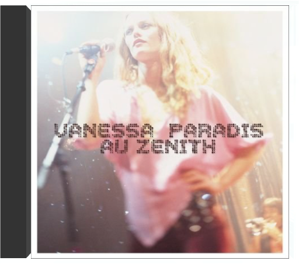

livevanessa paradis  Ce témoignage du concert triomphal qu'elle a donné à l'Olympia confirme, si besoin était, que Vanessa Paradis est bel et bien une artiste avec laquelle il faut compter, tant elle passe l'épreuve du feu avec une prestance aussi gracieuse qu'originale. De sa voix délicieusement frêle et agréablement troublante, elle égrène les plus belles perles de son répertoire. De son tout premier tube, "Joe le taxi", à "Marylin et John" ou "Maxou", signés Etienne Roda-Gill et Franck Langolff, et à ceux que lui concocta avec bonheur Serge Gainsbourg, comme "Tandem" ou "Dis-lui toi que je t'aime". Sans oublier les chansons qui lui ont valu une reconnaissance internationale via sa collaboration avec Lenny Kravitz, le très Motown "Be My Baby", "Natural High" ou "Sunday Monday" qu'elle interprète en anglais. Parce qu'en matière de reprises elle sait faire preuve d'un goût sensible, Vanessa Paradis nous gratifie à plaisir de ses versions personnalisées de "As Tears Go By" des Rolling Stones et des "Cactus" de Jacques Dutronc. Pour un album de 16 titres qui, entre rock, soul et funk, diffuse une émotion magique tant elle vibre de subtilités. —Sylvie Devilette au zénithvanessa paradis 1987. Une jeune interprète aux allures de Lolita, cartonne sur les ondes avec "Joe le taxi". Un succès retentissant qui la hissa parmi les espoirs de la variété française. Le sweat-shirt et le vieux jean troué de ses débuts rangés au placard des souvenirs, la chrysalide devenue papillon s'est imposée au fil de ses albums (sans pour autant se brûler les ailes aux feux des projecteurs), en s'entourant de grosses pointures comme Serge Gainsbourg et Lenny Kravitz. Grâce à eux, Vanessa se fait un nom au paradis des artistes. 2001. C'est sur les planches du Zénith qu'elle choisit d'accueillir ses fans pour une rétrospective musicale à travers laquelle on retrouve les tubes d'hier ("Marilyn & John", "Dis-lui toi que je t'aime", "Sunday Mondays"...) et les plus récents comme "Bliss", "Les Acrobates" ou "St Germain". À noter cet hommage rendu à son Pygmalion, Serge Gainsbourg, avec "Requiem pour un con", reprise percutante ovationnée par un public conquis. Vanessa Paradis n'a décidément plus rien à prouver. —Valérie Dupouy  blissvanessa paradis blissvanessa paradis Autrefois en balade, avec "Joe le taxi", dans l'ombre de Serge Gainsbourg ou de Lenny Kravitz, Vanessa Paradis, désormais émancipée, s'est mise à son compte pour raconter ses petits bonheurs domestiques, ses miracles quotidiens. L'ex-lolita devenue maman nourrit son Bliss de ballades languides et d'orchestrations acoustiques. N'ayant pas un goût très prononcé pour le minimalisme, elle verse volontiers dans l'éclectisme. Des variations orientales "L'Eau et le vin" aux cuivres de "Commando", des violoncelles et cordes de "Que fait la vie" à la basse sensuelle de "La la la song" (liste des instruments non exhaustive), Paradis s'offre un vrai bazar de sonorités diverses qui habillent berceuses, bossa et titres funky chantés tantôt en anglais, tantôt en français. Avec une naïveté revendiquée, Vanessa Paradis, auteur ("When I Say", "Saint-Germain") voire compositeur ("Les Acrobates"), flotte dans un univers câlin, voyage dans une intimité doucereuse. Elle s'émerveille des tendres gazouillis de sa fille "La Ballade de Lily Rose" et des mélodies savamment orchestrées par Franck Monnet, Didier Golemanas, Johnny Depp, Alain Bashung ou Mathieu « M » Chedid, producteur d'une partie de l'album. Bliss, un bouquet de titres au charme irrésistible, offert par Vanessa Paradis en pleine béatitude. —Sabrina Silamo  the virgin suicidesthe virgin suicides the virgin suicidesthe virgin suicides Pas de doute : la musique d'Air ne pouvait être que l'idéal contrechamp aux images du long métrage de Sofia Coppola. D'un côté le film, où cinq adolescentes évoluent dans un univers balisé par un système réfractaire à la contre-culture des années soixante-dix, de l'autre, point trop acidulée pour éviter de provoquer l'écoeurement, la musique qui slalome entre des références arty choisies avec goût : Gainsbourg évidemment, les effluves easy listening de la muzak environnementale et Pink Floyd. Entre la sensualité lancinante d'un groove organique déjà repéré sur Moon Safari et les nappes synthétiques planantes, Air ne choisit pas. Définitivement post. —Philippe Robert  master funkwatsonian institute master funkwatsonian institute Zustand Vinyl:NM, ,Cover:NM (Goldmine Standards) - Sie bestellen:LP:Watsonian Institute,Master Funk.Versand |


 Made with Delicious Library
Made with Delicious LibraryNancy, State zipflap congrotus delicious library Thomas, Julien